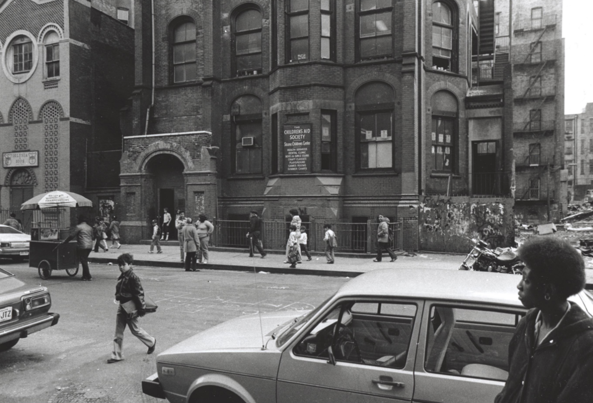
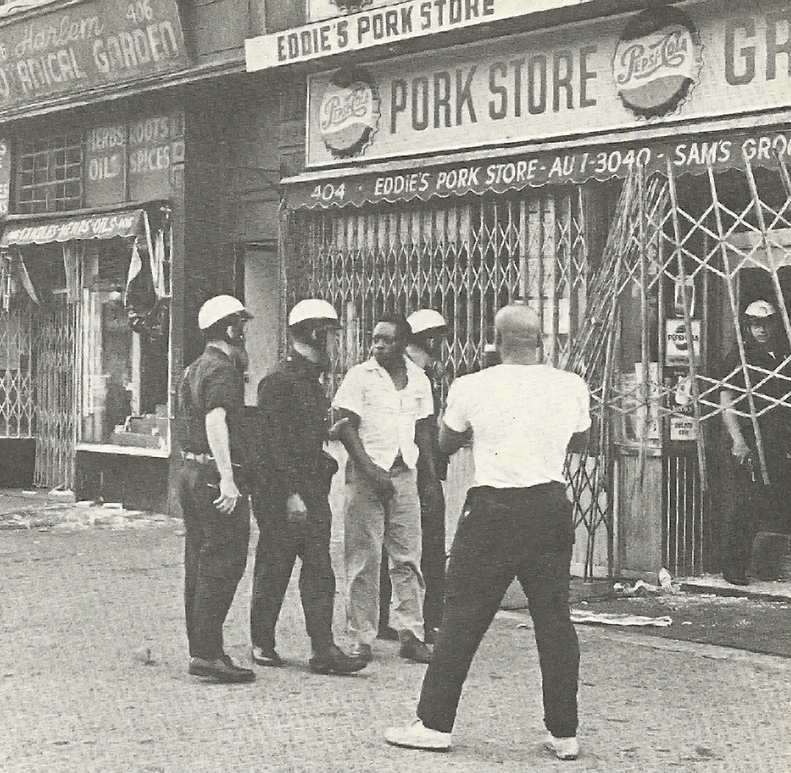
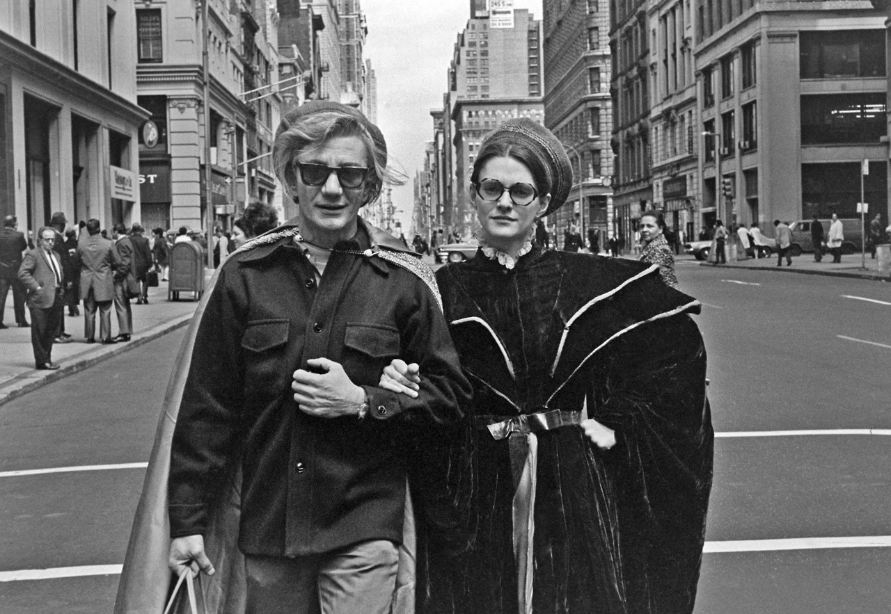
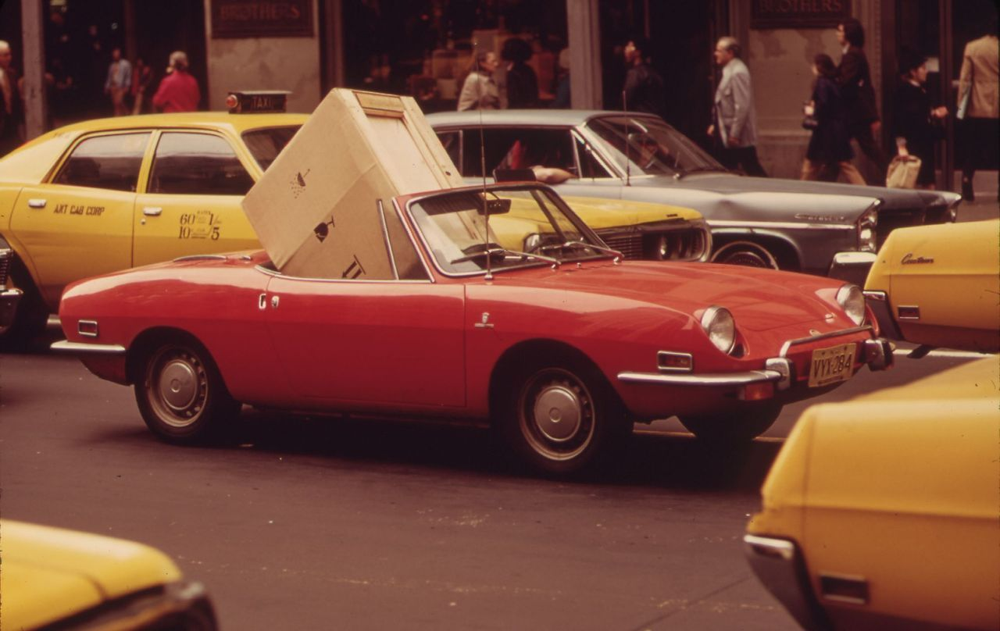
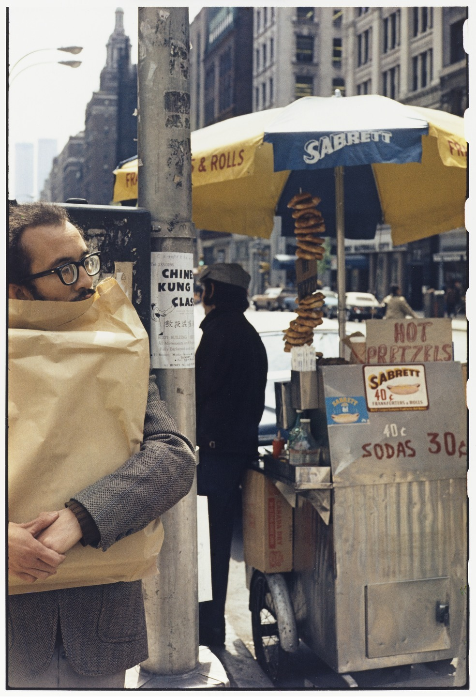
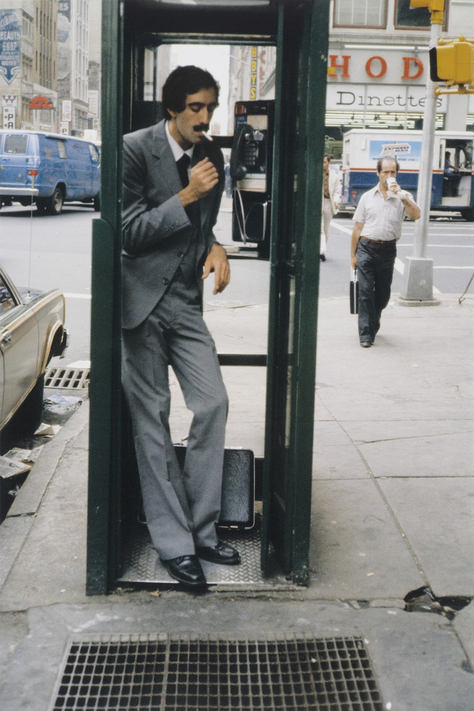
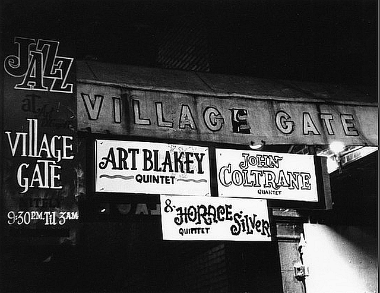
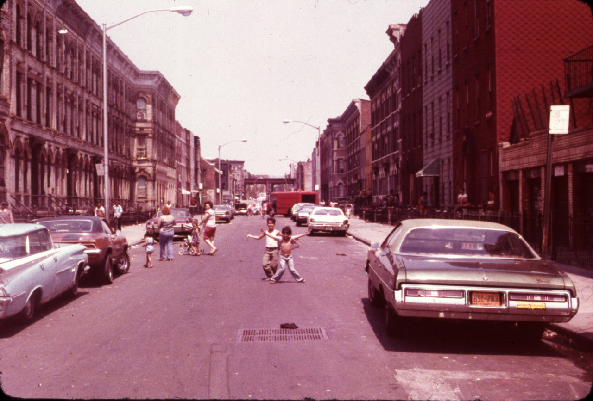

East 127th Street, 1979
East 127th Street, 1979

Lower East side, 1970s

Police at the pork store. [Insert cop-joke here.]

Rockin’ fashion in 1970
NYC Nostalgia turned 4 today!

Don’t worry, it’ll fit.

Man eating a bag instead of a 40 cent hot dog.

Dude in a phone booth, 1980.
Carrie Fisher and Harrison Ford in NYC, 1979

Village Gate Lineup - date unkn

Dancers on Strike, 1979
Jimmy Carter takes in the splendor of the South Bronx, 1977

Bushwick, Brooklyn, 1978

The Police in NYC, 1978